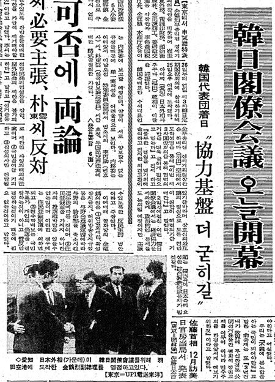
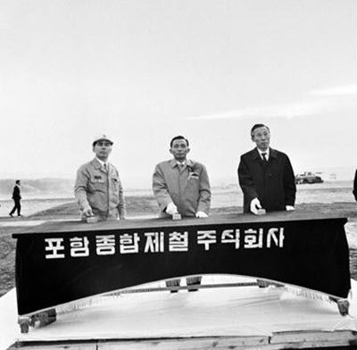

보도일 2014-12-31출처 조선일보 프리미엄조선 연재
8월 22일 일본철강연맹은 이나야마 회장의 주선으로 ‘한국제철소건설협력위원회’를 구성했다. 일본 철강회사들과 종합상사들로 구성한 이 위원회는 설계‧건설의 기술지원과 기자재 선정의 협력을 위한 조직이었다. 이날 일본정부는 한일각료회담의 의제를 검토하려는 각의를 소집하고 한국의 종합제철소 프로젝트를 상정해, 오히라 통산상을 포함한 각료 전원의 지지를 확인했다.
23일 박태준은 야하타, 후지, 니혼강관 등 3개사 대표의 이름으로 된 ‘포항종합제철 계획의 검토에 관한 건’이라는 공문을 받을 수 있었다. 서울행 비행기에 오른 그는 야스오카, 이나야마 양인의 은혜를 각골난망 심정으로 아로새겼다.
박태준은 홀가분하게 부총리를 방문했다. 뜻밖에 김학렬의 태도가 딱딱해졌다.
“일본정부가 22일 청구권자금 전용 문제에 대해서는 사실상 동의했지만, 양국 각료회담에서는 기술협력에 대해 까다롭게 나올 수도 있습니다. 일본 철강업계의 확실한 보증이 필요합니다. 그걸 쥐고 있어야 안심할 수 있습니다. 일본 3대 철강회사 사장들의 서명이 담긴 기술협약 문서를 받아주세요.”
“이 공문이면 됩니다. 일본인의 특성상 그런 확약 문서까지 요구하는 것은 생각할 수도 없는 일입니다. 그것은 신뢰를 의심하는 겁니다.”
“그래도 국가와 국가 간의 관계는 묘할 수 있습니다. 회담 개최 전까지 기술지원을 하겠다는 확약 문서를 대표들의 공동서명으로 받아주세요. 부탁합니다.”
박태준은 불가 사유를 꼽았다. 일본 3대 철강사 사장들이 이제 막 포철 일을 마치고 시골별장으로 휴가를 떠났을 가능성이 높다는 것, 한일각료회의가 나흘밖에 남지 않았다는 것, 그들의 신의를 의심하는 행동이 오히려 불신을 일으킬 수 있다는 것. 그러나 김학렬은 박태준의 마스코트와 다름없는 ‘완벽주의’를 들이밀었다.
“일을 완벽하게 처리하자는 것입니다. 완벽을 기하기 위해 다시 한 번 수고를 해주실 수 없겠습니까?”
“완벽하지는 않다? 바로 떠나겠습니다.”

박태준은 여장을 풀 겨를도 없이 다시 공항으로 나갔다. 참으로 멋쩍고 민망한 심부름에 내몰린 아이처럼 낭패감과 수치심이 마음속에 달라붙었지만 대의(大義) 달성을 위하여 ‘완벽을 기하자’고 하니 그따위 감정에 연연하고 싶지 않았다.
이나야마는 도쿄 본사에 있었다. 박태준은 괴로운 숙제를 솔직히 털어놓았다. 서양인들(KISA)과의 약속에서 너무 크게 당했기에, 만의 하나라도 대비하려는 한국정부의 노심초사를 이해해 달라는 양해도 구했다.
“다른 두 분 사장님과 관계 요로의 입장을 확인한 다음에 내일 연락을 드리겠습니다.”
이나야마가 호의를 무시당한 섭섭함을 참느라 말씨를 낮게 깔았다. 박태준은 난처했다. 그러나 체면을 구길 수밖에 없었다.
“시간이 너무 촉박하다는 점을 고려해주십시오. 한국정부는 확실한 문서를 갖고 싶은 것입니다.”
잠시 생각에 잠겼던 이나야마가 입을 열었다.
“알았습니다. 최선을 다해보겠습니다. 두 분께 전화를 해볼 테니 대기실에서 기다려주십시오.”
대기실로 나온 박태준은 면목이 없었다. 초조하기도 했다. 여태껏 수많은 일본인과 접촉했으나 지금처럼 마음이 무거운 적은 없었던 것 같았다. 다행히도 행운은 여전히 박태준의 편이었다. 이나야마가 서명한 문서를 건네주면서, 후지제철 사장과 니혼강관 사장도 마침 도쿄 사무실에 계시니 당장 찾아가라고 했다.
박태준은 김학렬이 요구한 기술지원 확약서를 품에 넣자 곧장 도쿄 시가지를 빠져나왔다. 하네다공항에는 서울행 오후 5시 노스웨스트오리엔트 항공기가 있었다. 그걸 아슬아슬하게 잡아타고 저녁놀에 물드는 동해를 건너오는 동안 그의 가슴은 성취 희열과 포항종합제철의 희망으로 뿌듯했다.
그런데 김학렬이 또 문제점을 집어냈다.
“서류에는 ‘100만 톤 규모의 포항제철소 건설계획을 검토한 결과 일응(一應) 타당성이 있다고 판단되며….’ 하는 구절이 있군요.”
박태준은 잠자코 기다렸다. 부총리가 말을 이었다.
“일응 타당성이 있다? 이게 안 좋아요. 일응 타당성이 있다, ‘일응’, 이게 분명치가 않아요. 이래서는 지원 의사가 완전히 확실하다고 생각할 수 없습니다. ‘일응’을 빼고 ‘타당성이 있다’라고만 된 문서를 새로 받아주세요.”
박태준은 입술을 굳게 다물었다. 희열과 희망으로 뿌듯했던 가슴에 순간적으로 서운한 감정이 넘쳐났다. 실망감이 꿈틀대고 분노마저 일어서려 했다.
‘일응을 불안해하다니…. 일응, 일정 정도, 이걸로 사람을 거듭 망신시켜야 한단 말인가!’
그는 버럭 고함을 지르고 싶었다. 그러나 가만히 침을 삼켰다.
“일본 철강3사 대표들이 시골로 휴가를 떠나서 도쿄를 비웠습니다. 이건 서명을 받는 자리에서 직접 확인한 사실입니다. 그러니 시간이 안 됩니다.”
박태준이 불가 사유를 차분히 밝혔다.
“그래도 한 번 더 수고하셔야 합니다. ‘일응’을 빼야만 애매모호한 느낌을 지울 수 있습니다.”
“그 한 단어 때문에 우리가 그분들의 신의를 의심해야 합니까? 우리는 당신들을 제대로 믿지 못하고 있다, 그러니 일응을 반드시 빼줘야 한다, 이렇게 되는 것인데, 이러한 우리 정부의 마음을 그분들에게 알려주자는 것입니까?”
“미안합니다. ‘일응’이 있으면 애매모호한 문서라는 지적을 받을 수도 있습니다.”

김학렬은 ‘일응’을 뺀 확약서로 다시 받아와야 한다고 버텼다. 박태준은 몰랐으나 그에게는 그럴 수밖에 없는 사정이 있었다. 한일각료회담을 준비하는 김학렬에게 박정희가 “이번에 도쿄 가서 포철 자금을 합의하지 못하면 돌아오지 말라”고 강력히 지시했던 것이다.
박태준은 어쩔 것인가? 똑같은 일로 세 번째 일본으로 날아가서 ‘일응’만 뺀 문서로 다시 만들어 달라고 고개 숙여 부탁해야 하는가? ‘일응’ 때문에 쩔쩔매며 두려워하다니! 그는 벌레를 씹는 기분이었다.